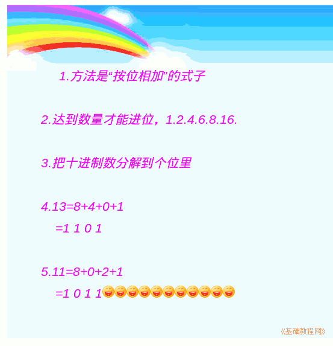

2011-2012 第一学期七年级电脑操作基础教学课程设计
作者：TeliuTe 来源：基础教程网
十一、学会十进制转二进制 返回目录 下一课学习目标：学会把十进制数分解到二进制的位里；
注意事项：绕过弯来，二进制的位；
1、十进制转二进制
1）二进制的位分别是1、2、4、8、16...；
2）把十进制数分解成这些数字的和；
3）不够的补0再到下一位接着来；
4）直到全部分解完；

课后记 2011-9-29 17:16：
进去之前先把学习要求一下，本节学习了十进制转二进制的基础知识，如果你成功地完成了练习，请继续学习下一课内容；
本教程由86团学校TeliuTe制作|著作权所有
基础教程网：http://teliute.org/
美丽的校园……
转载和引用本站内容，请保留版权信息和本站链接。